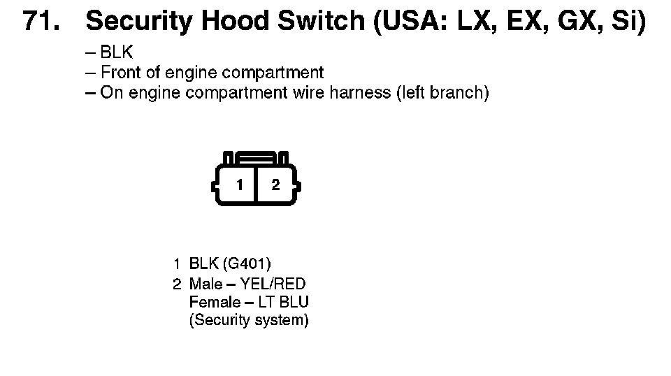
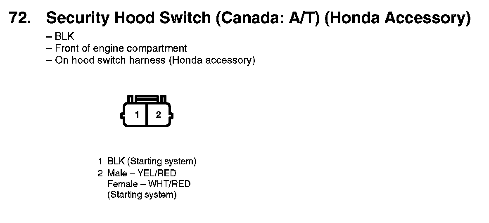

Operation CHARM
: Car repair manuals for everyone.
Home
>>
Honda
>>
2007
>>
Civic Si L4-2.0L
>>
Repair and Diagnosis
>>
Accessories and Optional Equipment
>>
Antitheft and Alarm Systems
>>
Hood Sensor/Switch (For Alarm)
>>
Diagrams
Hood Sensor/Switch (For Alarm): Diagrams
71. Security Hood Switch (USA: LX, EX, GX, Si):

72. Security Hood Switch (Canada: A/T) (Honda Accessory):
